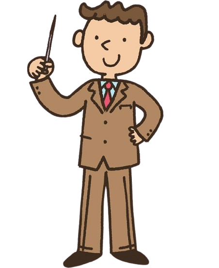

¿Por qué nació esta guía?
Esta guía nació como una respuesta creativa y educativa a un reto planteado en la clase de Desarrollo Web, donde se nos brindó la oportunidad de desarrollar un proyecto que no solo cumpliera con los criterios técnicos del una asignatura, sino que también aportara valor a nuestra comunidad estudiantil...
Como grupo elegimos al profesor Grebil Pascua y su asignatura Matemáticas como muéstra de cariño, respeto y agradecimiento por el gran maestro que es... desde el primer momento, el profesor confió en nosotros.
Así surgió esta Guía a la Trigonometría: como una herramienta visual, interactiva y práctica que busca enriquecer el proceso de aprendizaje de las matemáticas.
¿Qué buscamos?
Nuestro principal objetivo fue hacer que la Ttrigonometría dejara de ser un tema temido y pasara a ser comprendido. Pensamos en los estudiantes de grados menores del Instituto Gubernamental Choloma, quienes a menudo enfrentan dificultades con conceptos abstractos. Por ello, diseñamos una guía clara y accesible, con apoyo ejercicios interactivos y recursos visuales que hacen más llevadero el estudio. La hicimos de manera que se visualice bien en cualquier dispositivo, con navegación intuitiva y materiales que se adaptan al ritmo de cada estudiante.
También quisimos que fuera divertida, moderna y que pudiera utilizarse como referencia tanto en clase como en casa a el alcance de sus manos.
¿Quiénes lo hicieron?
El proyecto fue desarrollado por los alumnos de último grado: Christopher Tabora, Lency Ordoñez y José Villalobos. Trabajamos arduramente, cada uno aportando sus fortalezas en diseño, programación y contenido. Todo el trabajo fue respaldado por el profesor Grebil Pascua, quien no solo nos brindó su apoyo académico, sino también su visión para que esta guía tuviera sentido pedagógico.
¿Cómo se desarrolló?
Desde el diseño hasta la implementación, todo fue creado desde cero. Utilizamos las herramientas Visual Studio Code para escribir el código en HTML5, CSS y JavaScript, y empleamos el framework Bootstrap para lograr la estructura responsiva y atractiva que estás visualizando. Dedicamos horas al diseño de la interfaz, pruebas de funcionalidad y ajustes visuales para darles la mejor experiencia.


"Las matemáticas son el alfabeto con el cual Dios ha escrito el universo."